Вычисления в ALEPIZ используются для формирования значений переменных в счетчиках и свойствах объектов. Для вычислений используются функции, работающие с историческими данными и функции с операндами, позволяющие создавать выражения и преобразовывать различные значения.
Функции для работы с историческими данными
Создание переменной
Функции используются только в действии Counter settings и позволяют получить исторические данные по счетчикам, для формирования различных условий. Результат выполнения функции присваивается переменной, которую в дальнейшем можно использовать в формировании различных выражений. Для создания такой переменной в действии Counter settings необходимо выбрать вкладку Variables и нажать на кнопку add_box. Подробно об интерфейсе действия Counter settings можно прочитать на ее странице помощи. По использованию каждой исторической функции можно получить подсказку, нажав на иконку help_outline в правом верхнем углу формы с параметрами переменной.
Конверсии
Для удобства записи числовых значений переменных можно использовать предопределенные конверсии. Например, для указания минимального лимита памяти в 4Gb нет необходимости переводить это число в байты (4294967296) для сравнения с получаемым значением из счетчика. Можно использовать любые конверсии из таблицы ниже. Система автоматически осуществит перевод в случае с данными - в байты, а в случае с временем - в миллисекунды. Будьте внимательны с работой с временем: многие счетчики используют в качестве единицы времени не миллисекунды, а секунды. В этом случае необходимо делать преобразование значения конверсии в счетчике за счет деления значения на 1000.
| Название | Описание | Множитель |
|---|---|---|
| Kb | Килобайт | 1 024 |
| Mb | Мегабайт | 1 048 576 |
| Gb | Гигабайт | 1 073 741 824 |
| s | Секунды | 1 000 |
| m | Минуты | 60 000 |
| h | Часы | 3 600 000 |
| d | Дни | 86 400 000 |
| w | Недели | 604 800 000 |
Примеры использования исторических функций
Исторические функции запрашивают из базы данных одно или несколько значений, обрабатывают их и возвращают какое-то одно значение, например максимум или среднее арифметическое. В примерах будет указано названия функции и в скобках ее параметры
- last() - возвращает последнее значение, записанное в базу данных. Если переменная применяется для получения данных из родительского счетчика, результат может отличаться от переменной %:PARENT_VALUE:%, так как переменная возвращает результат от родительского счетчика еще до записи в базу данных. last() и last(#0) означают одно и тоже. В данном примере данные возвращаются с того же объекта, с которого собираются данные по текущему счетчику. Изменить это можно нажав на поле Object. 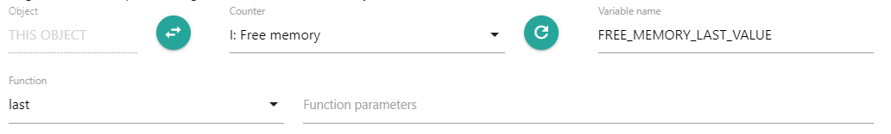
- last(#1) - возвращает предпоследнее значение, записанное в базу данных. Префикс # означает, что требуется получить данные именно с определенного значения или определенного количества значений. Без этого префикса параметры интерпретируются как время. Например, max(#300) вернет максимум с последних 300 значений, а max(300) вернет максимум с данных, записанных в базу за последние 300 миллисекунд. 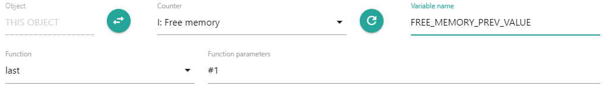
- max(5m) - возвращает максимальное значение за последние 5 минут. Для параметров времени допускается использовать в качестве суффиксов конверсии. Параметр, записанный без конверсии интерпретируется как миллисекунды. Значение, возвращаемое этой функцией можно использовать для генерации события с условием, что объем оперативной памяти стал меньше предельного значения. Если условие основано на функции last(), а не на max(5m) и объем оперативной памяти то уменьшается ниже предельного значения, то увеличивается выше, мы получим большое количество событий об одной и той же проблеме. Использование функции max(5m) в данном случае гарантирует, что за последние 5 минут объем оперативной памяти стал меньше предельного значения. 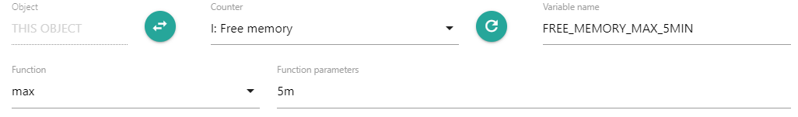
- nodata(5m) - за последние 5 минут данных не было (1) или были (0). Если вы создаете событие, которое должно информировать вас о том, что последнее время данных не было, не делайте его зависимым от сборщика, который получает эти данные. Если он данные не получает, то и зависимые счетчики не сработают. Подобные события могут зависеть, например, от счетчика timer. 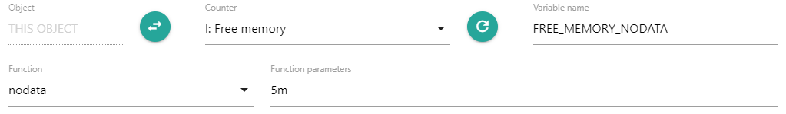
- change(10m) разница между последним и предпоследним значением в базе данных, полученным за последние 10 минут. В данном случае используется значение для счетчика, собирающего данные Elapsed Time процесса - время работы процесса в секундах. Если процесс не работает, этот счетчик не получает данные. Мы проверяем, что за последние 10 минут процесс возвращал не менее двух значений. Если значение, возвращаемое функцией change(10m) окажется меньше нуля, это значит, что процесс за последние 10 минут был перезапущен. 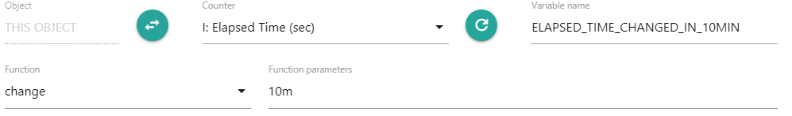
- count(10m, 0, 400, "gt") - сколько значений превышающих 400 вернулось за последние 10 минут. Счетчик CPU Time показывает потребление процессом процессора. Так как в современных серверах ядер CPU несколько, потребление процессора может превышать 100%. В данном случае мы получаем количество значений за последние 10 минут, когда потребление процессора процессом оказалось больше 400%. Мы собираем данные раз в 30 секунд. Если количество значений за 10 минут превысит 10 * 0.5 - 1 = 19, необходимо сгенерировать событие о повышенном потреблении процессора процессом. 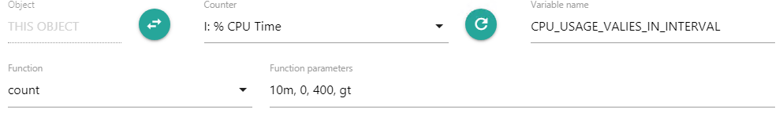
- lastRob(#20, #0, 0) - получаем последнее значение из выборки в 20 значений, исключая статистические выбросы. Для расчетов робастности данных в функции используется алгоритм Tukey's Fences. Нам нужно получить время запуска сервиса по расписанию, основываясь на последних 20 значениях времени старта сервиса. В исключительных случаях запуск сервиса может быть произведен вручную, вне расписания. Это и будут статистические выбросы которые нас не интересуют. Функция их отбросит и мы получим требуемый результат - время старта сервиса по расписанию. 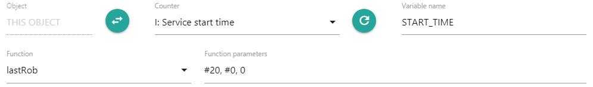
- forecast(30m, 0, 15m) - берем значения за последние 30 минут и на их основе предсказываем, какое значение у счетчика будет через 15 минут. Для выполнения предсказания используется линейная аппроксимация. В данном случае функция используется для предсказания события об уменьшении свободного пространства на диске через 15 минут до нулевого значения. Для этого в выражении Update event необходимо сравнить значение переменной FREE_DISK_SPACE_FORECAST с 0. Если FREE_DISK_SPACE_FORECAST меньше нуля, значит свободное место на диске может закончится через 15 минут. 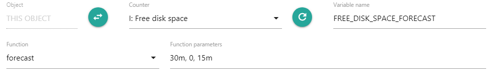
Функции и выражения для преобразования значений
Создание переменной
Функции используются в действиях Counter settings и Objects properties и позволяют производить преобразования данных для формирования различных условий. Результат выполнения функции присваивается переменной, которую в дальнейшем так же можно использовать в формировании выражений. Для создания такой переменной в действии Counter settings необходимо выбрать вкладку Variables и нажать на кнопку library_add, а в Objects Properties необходимо нажать на add и выбрать тип Calculated expression. Подробно об интерфейсе действий Counter settings и Objects properties можно прочитать на их страницах помощи. По функциям и операндам, которые используются при формированию выражения можно получить подсказку, нажав на иконку help_outline в правом верхнем углу формы с параметрами переменной.
Функции могут использоваться для расчета значений в свойствах объекта и в счетчиках.
Примеры использования выражений
- В данном примере определяем константу для счетчика FREE_MEMORY_LIMIT, равную 4Gb. В дальнейшем ее можно будет использовать как предельное значение для генерации событий о том, что свободной оперативной памяти на сервере осталось слишком мало. Суффикс Gb является конверсией, позволяющей удобно записывать значения. В процессе расчетов значение будет преобразовано в байты. Если значение в 4Gb не подходит для определенного сервера, например оно слишком большое, можно определить свое значение переменной FREE_MEMORY_LIMIT в действии Objects properties для объекта, соответствующего этому серверу. При вычислении значений переменных в первую очередь вычисляются значения из свойств объектов, и если среди свойств переменные не найдены, значения вычисляются из переменных, заданных в счетчике. Поэтому переменные, определенные в Objects properties, всегда имеют приоритет перед переменными, определенными в Counter settings. 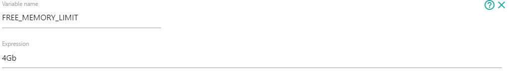
- Формируем условие для генерации события о том, что свободной памяти осталось слишком мало. Для этого записываем "%:FREE_MEMORY_MAX_5MIN:% < %:FREE_MEMORY_LIMIT:%" в Update Event для счетчика, который будет генерировать данное событие. 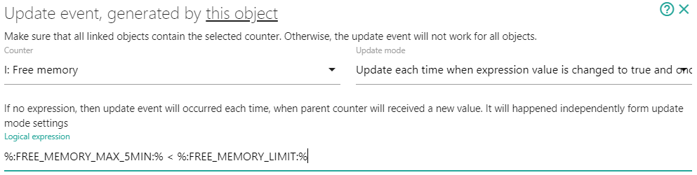
- Для создания условия о том, что данные по свободной памяти не собираются, необходимо сделать событие Update Event c зависимостью от счетчика Timer и периодически проверять наличие данных. Если сделать зависимость от счетчика I: Free memory, то когда данные по нему не поступают, зависимость не сработает и мы никогда не получим уведомления о проблеме. Для этого, перед созданием Update event, необходимо в системном меню Objects выбрать объект Timer. 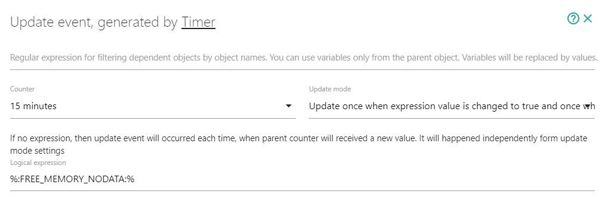
- Если мы создали описание для события вида "Free memory is %:HUMAN_FREE_MEMORY:%. Threshold %:HUMAN_FREE_MEMORY_LIMIT:%", нам необходимо определить переменные HUMAN_FREE_MEMORY и HUMAN_FREE_MEMORY_LIMIT. 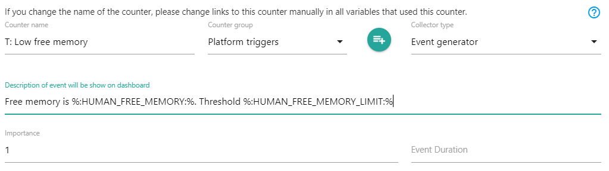
- Мы получили от счетчика Objects discovery значение (ниже) и нам нужно преобразовать его так, чтобы получилось имя для объекта ALEPIZ, который мы в последствии автоматически создадим. Имя объекта должно быть именем хоста в верхнем регистре без домена или, если не удалось получить имя хоста, то просто IP адресом. В данном случае это будет ALEPIZ.
- FULL_HOSTNAME = getValueFromJSONStr(%:PARENT_VALUE:%, "hostname")
- IP_ADDRESS = getValueFromJSONStr(%:PARENT_VALUE:%, "IP")
- Попробуем создать выражение, проверяющее, является ли текущее время рабочим временем для сервиса, который запускается и останавливается по расписанию. Определим вспомогательные переменные:
- START_TIME = lastRob(#20, #0, 0) для счетчика I: Start time - получим время запуска сервиса
- STOP_TIME = lastRob(#20, #0, 0) для счетчика I: Stop time - получим время остановки сервиса
- CURRENT_TIME = time2msec() - текущее время в миллисекундах
- START_TIME_SCHEDULE_OUTLIER = 2m (допустимый разброс времени запуска сервиса - 2 минуты)
- STOP_TIME_SCHEDULE_OUTLIER= 2m (допустимый разброс времени остановки сервиса - 2 минуты)
Мы не можем в данном случае вместо HUMAN_FREE_MEMORY использовать переменную PARENT_VALUE, которая будет равна значению, полученному то родительского счетчика I: Free memory и определенную нами переменную FREE_MEMORY_LIMIT вместо HUMAN_FREE_MEMORY_LIMIT, так как значения этих переменных будут представлено в байтах,что приведет к нечитаемому сообщению о случившейся проблеме. В случае с переменной FREE_MEMORY_LIMIT, не смотря на то, что мы указали ее значение равным 4Gb, при любом последующем использовании переменной, ее значение будет преобразовано в байты. Поэтому нам потребуется использовать функцию, преобразующую байты к удобному для человека восприятию. Для этого служит функция toHuman().
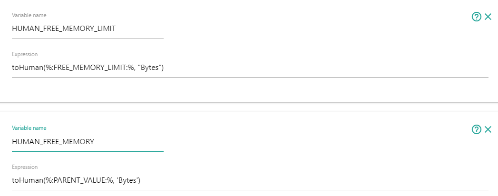В Dashboard мы получим запись о событии как на скриншоте. В данном случае FREE_MEMORY_LIMIT для хоста PAD-ASBEL в действии Objects properties переопределен и установлен в 1500Mb.
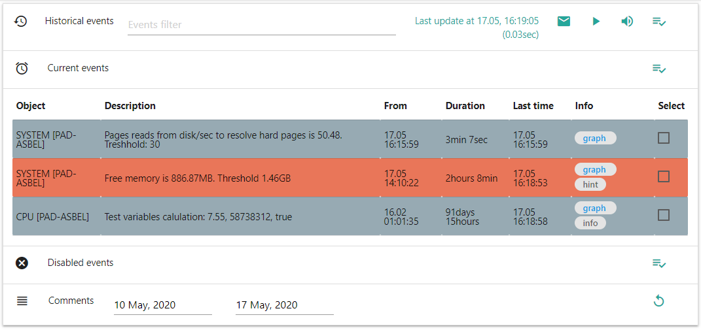{
"hostname": "alepiz.com",
"SNMP": "Hardware: Intel64 Family 6 Model 85 Stepping 4 AT/AT COMPATIBLE - Software: Windows Version 6.3 (Build 14393 Multiprocessor Free)",
"zabbix": {
"system.hostname": "ALEPIZ",
"system.uname": "Windows ALEPIZ 10.0.14393 Microsoft Windows Server 2016 Standard x64"
},
"ping": 1,
"IP": "192.168.0.1"
}Для этого определим переменные
Функция getValueFromJSONStr получит из JSON объекта, значение ключей "hostname" ("alepiz.com") и "IP" ("192.168.0.1").
Далее нам необходимо создать следующее условие: если существует значение переменной FULL_HOSTNAME, преобразовать его в верхний регистр и если в имени хоста есть точка, то обрезать все после первой точки. Если значения FULL_HOSTNAME не существует, вернуть значение переменой IP_ADDRESS.
Функция ifElse() принимает в качестве первого аргумента - условие и если условие выполнилось, возвращает второй аргумент, если не выполнилось - третий аргумент. Функция testRE() проверяет соответствие первого аргумента регулярному выражению во втором аргументе. replaceRE() производит замену по регулярному выражению, а toUpperCase() преобразует строку в верхний регистр. Будем использовать их для создания выражения:
ifElse( %:FULL_HOSTNAME:%,
ifElse ( testRE(%:FULL_HOSTNAME:%, "\."),
toUpperCase( replaceRE(%:FULL_HOSTNAME:%, "^([^\.]+)\.?.+$", "$1") ),
toUpperCase( %:FULL_HOSTNAME:% )
),
%:IP_ADDRESS:%
)Назовем переменную SHORT_HOSTNAME и введем для нее созданное нами выражение:
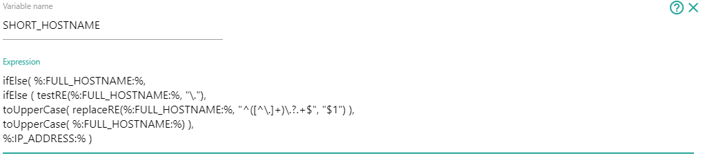Функцией lastRob получаем последнее значение из выборки в 20 значений, исключая статистические выбросы, то есть исключаем из выборки значений времена запусков и остановок сервиса не по расписанию.
Нам нужно учесть что сервис может запускаться после полуночи и останавливаться до полуночи, тогда интервал его работы относительно текущего времени будет больше START_TIME и меньше STOP_TIME. Если сервис запускается до полуночи, а останавливаться после полуночи, тогда интервал его работы относительно текущего времени будет больше START_TIME или меньше STOP_TIME. Составляем выражение:
ifElse(
%:START_TIME:% < %:STOP_TIME:%,
%:CURRENT_TIME:% > %:START_TIME:% + %:START_TIME_SCHEDULE_OUTLIER:% &&
%:CURRENT_TIME:% < %:STOP_TIME:% - %:STOP_TIME_SCHEDULE_OUTLIER:%,
%:CURRENT_TIME:% > %:START_TIME:% + %:START_TIME_SCHEDULE_OUTLIER:% ||
%:CURRENT_TIME:% < %:STOP_TIME:% - %:STOP_TIME_SCHEDULE_OUTLIER:%
)
Создаем переменную IS_IT_WORKING_TIME и и введем для нее созданное нами выражение:
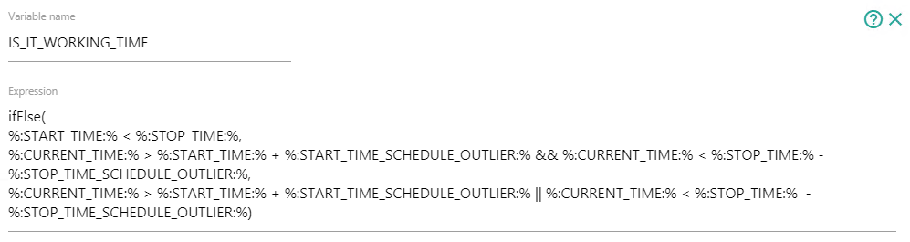